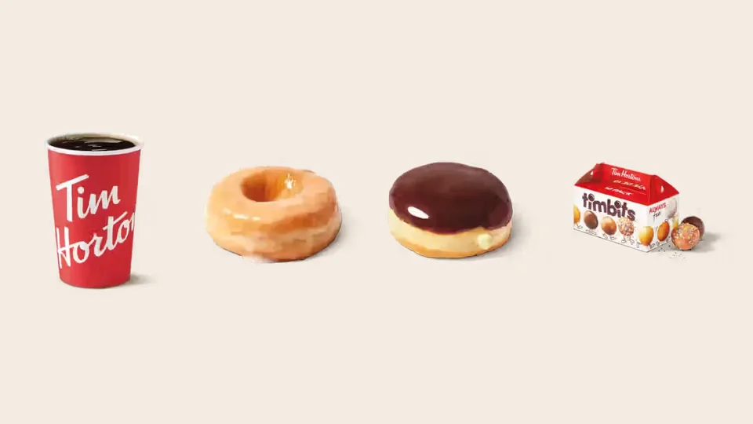

Unofficial fan guide - not affiliated with Tim Hortons
Dunkin' is coming back to Canada. Here is how it stacks up against Tims on price, coffee, donuts and drinks.
Full Menu / Blog / Tim Hortons vs Dunkin'

Tim Hortons wins on donuts and on price, and Dunkin' wins on drink variety. Their brewed coffee is close: both are medium roasts with about 205 to 210 mg of caffeine in a 14 oz medium. Dunkin' has no Canadian stores yet, but its first Toronto and Montreal locations are planned for late 2026 or early 2027.
Tim Hortons and Dunkin' sell the same core things: brewed coffee, iced drinks, donuts, donut holes and breakfast sandwiches. In Canada they haven't competed head to head since 2018, when Dunkin' left. That changes soon. A Montreal company signed a deal in May 2026 to bring Dunkin' back with hundreds of stores.
This comparison uses our own Tim Hortons menu prices (Canadian dollars, before tax, October 2026), Dunkin' U.S. prices from menu trackers, and published taste tests. Dunkin' hasn't announced Canadian prices, so we've kept the two currencies separate.
| Tim Hortons | Dunkin' | |
|---|---|---|
| Founded | 1964, Hamilton, Ontario | 1950, Quincy, Massachusetts |
| Owner | Restaurant Brands International (since 2014) | Inspire Brands (since 2020) |
| Restaurants worldwide | 6,209 (June 2026) | 14,200+ in 39 countries |
| Restaurants in Canada | About 3,900 | 0 (returning late 2026 or early 2027) |
| House coffee | Original Blend, 100% Arabica, medium roast | Original Blend, medium roast |
| Caffeine, medium hot coffee | About 205 mg (14 oz) | About 210 mg (14 oz) |
| Medium hot coffee | $1.83 CAD | About US$2.79 |
| Donut holes | Timbits | Munchkins |
| Frozen coffee drink | Iced Capp | Frozen Coffee / Coolatta |
| Rewards app | Tims Rewards | Dunkin' Rewards |
Yes. Foodtastic, a Montreal-based restaurant company, signed a master franchise agreement with Dunkin' owner Inspire Brands in May 2026. Its first Dunkin' locations will open in the Toronto and Montreal areas in late 2026 or early 2027. Foodtastic already runs more than 1,200 restaurants across 27 brands, including Second Cup and Pita Pit.
The plan is large. Foodtastic founder and CEO Peter Mammas has talked about 600 to 700 Canadian locations, nearly 200 of them in Quebec. He has also said that "within 12 months, we'll be opening one Dunkin' per week." The first stores will be company-owned, so Foodtastic can fix problems before it sells franchises. That is still a small number next to roughly 3,900 Tim Hortons in Canada, which we count in our guide to how many Tim Hortons there are in Canada.
Dunkin' left Canada in September 2018, after 57 years. Quebec was its stronghold, with about 210 stores at its peak. That network shrank as Tim Hortons grew.
A franchisee lawsuit sped up the exit. Twenty-one Quebec franchisees, who ran 32 stores between them, sued Dunkin's Canadian parent at the time, Allied Domecq. They argued it had failed to protect and promote the brand against Tim Hortons. The court awarded them about $16.4 million, and Quebec's Court of Appeal upheld the decision.
Tim Hortons is cheaper for almost every drink. The table below sets our Canadian Tim Hortons prices next to Dunkin' U.S. prices from a menu tracker (September 2026). They are in different currencies, but Tims costs less even before you convert Canadian dollars, which are worth less than U.S. dollars.
| Item (medium where sized) | Tim Hortons (CAD) | Dunkin' (USD, approx.) |
|---|---|---|
| Hot brewed coffee | $1.83 | $2.79 |
| Iced coffee | $2.59 | $3.49 |
| Cold brew | $2.99 | $4.29 |
| Latte | $3.69 | $4.79 |
| Frozen coffee drink | $3.79 (Iced Capp) | $4.49 (Coolatta) |
| Single donut | $2.09 | $1.69 (glazed) |
| Bacon breakfast sandwich | $4.49 | $5.29 (on a bagel) |
| Hash brown | $2.19 | $2.49 |
The single donut is the only item where Dunkin's number is lower. Dunkin' U.S. prices vary a lot by state, and Foodtastic hasn't said what it will charge in Canada. For the full Tims price list, see our coffee menu and donuts menu.
The two house coffees are closer than either brand's fans like to admit. Both chains call their brewed coffee "Original Blend," and both are medium roasts. Tim Hortons says its Original Blend is 100% Arabica, blended and roasted in Canada.
They are almost tied. A 14 oz medium Tim Hortons brewed coffee has about 205 mg of caffeine. A 14 oz medium Dunkin' Original Blend has about 210 mg. The Tims figure comes from caffeine data the company published in 2008, so treat both as close estimates.
For a stronger cup at either chain, size up rather than switching brands. A Tims extra large has about 330 mg, which is most of Health Canada's suggested 400 mg daily limit for adults.
Dunkin' renamed itself from "Dunkin' Donuts" to just "Dunkin'" in January 2019 to show it was becoming a drink-led brand. Its menu reflects that, with many flavour swirls, fruit Refreshers and matcha lattes. One U.S. reviewer who grew up with both chains said Tims' fruit drinks taste "waterier" than Dunkin's Refreshers.
Tim Hortons wins on the classics. Its Iced Capp is the most-ordered cold drink in Canada, and its Double-Double is the most-ordered hot drink. For the full ranking, see our list of the best Tim Hortons drinks.
Tim Hortons has better donuts, according to both published head-to-head tests we found. In Tasting Table's December 2024 test, Tims won all seven rounds: plain glazed, frosted, French cruller, chocolate glazed, Boston cream, sprinkles and the coffee roll. The reviewer described Dunkin's donuts as plain and "machine-made," while Tims' had more layered flavours.
Narcity's April 2023 test, run with donuts from Buffalo, reached the same verdict. The Tims Boston Cream scored 8 out of 10, while Dunkin's scored 6 to 7. Even the American reviewer who preferred Dunkin' overall gave the donut round to Tims, and said Timbits have a better texture than Munchkins.
Tims' donuts aren't made from scratch in each store. Since 2003 they have been partly baked in a factory, frozen and finished in each restaurant. Our guide to whether Tim Hortons donuts are baked or fried explains how that works.
Dunkin' has more drink options, and Tim Hortons has more food. Dunkin's strength is drink customisation: Refreshers, matcha, espresso drinks and a long list of flavour shots and swirls. Tims' menu is broader on food, with bagels, wraps, loaded bowls, a full lunch menu and a large donut and Timbits case.
On breakfast, a U.S. reviewer from western New York, where both chains operate, preferred Dunkin's sandwiches. The same reviewer gave Tims the edge on bagels and lunch. If breakfast sandwiches matter most to you, compare the two in person when Dunkin' opens near you.
If you're comparing Tims with other chains too, see our Tim Hortons vs Starbucks price comparison and our Tim Hortons vs McDonald's coffee test.
Yes. Foodtastic, a Montreal-based restaurant company, plans to open the first new Canadian Dunkin' locations in the Toronto and Montreal areas in late 2026 or early 2027. It has talked about eventually opening 600 to 700 stores across Canada.
Dunkin' left in September 2018 after losing most of its Quebec business to Tim Hortons. Quebec franchisees had also won a court case worth about $16.4 million, arguing that Dunkin's Canadian parent failed to protect the brand.
Yes, for almost every drink. A medium Tims brewed coffee is $1.83 CAD, while a medium Dunkin' coffee costs about US$2.79 in the U.S. Dunkin's single glazed donut is the main exception.
Barely. A 14 oz medium Dunkin' Original Blend has about 210 mg of caffeine, and a 14 oz medium Tims brewed coffee has about 205 mg. You won't notice the difference.
Tim Hortons, according to both published head-to-head tests we found. Tasting Table gave Tims all seven rounds in 2024, and Narcity scored the Tims Boston Cream higher in 2023.
Munchkins are Dunkin's donut holes, its version of Timbits. Both come in mixed boxes. A 10-pack of Timbits costs $3.19 at Tim Hortons in Canada.
The Iced Capp is Tims' closest match to Dunkin's frozen coffee drinks. For a fruity frozen drink like a fruit Coolatta, try a Tims Frozen Lemonade or a frozen Quencher.
Inspire Brands has owned Dunkin' since December 2020, when it bought Dunkin' Brands for $11.3 billion. Restaurant Brands International has owned Tim Hortons since December 2014. Our guide to who owns Tim Hortons has the full history.
Yes, worldwide. Dunkin' has more than 14,200 locations in 39 countries, compared with 6,209 Tim Hortons. In Canada, Tim Hortons is far bigger, with about 3,900 restaurants.
Dunkin' is American. It was founded in Quincy, Massachusetts, in 1950 and is based in Canton, Massachusetts. Tim Hortons is Canadian, founded in Hamilton, Ontario, in 1964.
Mostly in U.S. border states. New York, Michigan and Ohio have the most U.S. Tim Hortons, and Buffalo alone has 32. Dunkin' is common across those states too. See our guide to Tim Hortons in the U.S..
This is an independent, unofficial guide. It is not affiliated with, endorsed by, or sponsored by Tim Hortons, Restaurant Brands International, Dunkin' or Inspire Brands. Tim Hortons prices come from our menu pages (Canadian dollars, before tax, as of October 2026). Dunkin' prices are approximate U.S. averages from a menu tracker, and Dunkin' has not announced Canadian prices. Taste results come from Tasting Table and Narcity. See Sources.